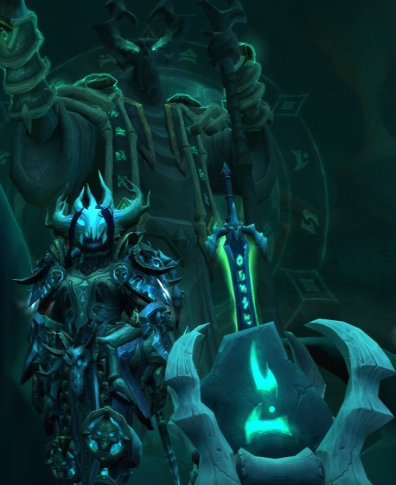

My History with World of Warcraft 
I started playing World of Warcraft around mid-2014, towards the end of the Mists of Pandaria expansion. I had very little idea what I was doing when I started and the only other MMO I had played before WoW was Final Fantasy XI, which has very different gameplay elements. But eventually, through a random guild invitation, I found a group of people to socialize with and got to experience the joys and frustrations of raiding. During that time I saved the world from several threats such an insane tyrant exploiting the powers of a dead Old God, time travelling Orcish hordes, and a space faring demonic Legion. Like I said earlier, I started toward the end of Mists of Pandaria and continued playing until roughly a month after the release of Battle for Azeroth, at which point I cancelled my subscription to the game, and then regrettably had that account deleted. But in late 2020 a friend of mine put the itch of WoW back in my brain, so now I’m back traversing the lands of Azeroth and beyond.